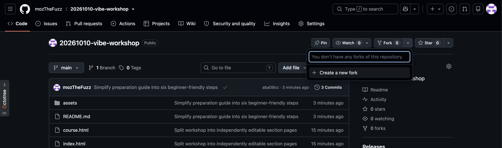
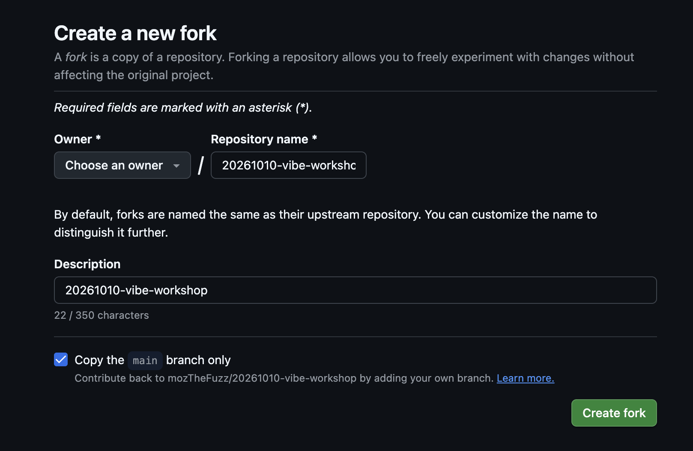

1. 先看準備清單
跟著七個步驟，準備好上課用的電腦，最後做出一個可以預覽的小網頁。
- 帳號：GitHub、Netlify、ngrok、LINE Developers，以及可登入 Antigravity 的 Google 帳號。請確認能登入並收取驗證信。
- 軟體：Antigravity IDE、Node.js（含 npm）、Git。
- 設備：上課會使用的 Windows 或 Mac 電腦、網路與可安裝軟體的權限。
依序完成：建立帳號 → Fork 課程專案 → 設定上課工具 → 安裝必要工具 → 小練習 → 勾選驗收清單。已有帳號或工具，可直接確認能使用。
2. 建立帳號：GitHub、Netlify、ngrok、LINE Developers
先建立 GitHub 帳號
用途：存放你的網站程式與修改紀錄。
- 開啟 GitHub 註冊頁，填寫帳號資料。
- 完成驗證信與畫面上的驗證。
- 登入後，開啟個人帳號選單，確認自己的使用者名稱。
完成條件：能登入 GitHub，並找得到自己的使用者名稱。
再用 GitHub 登入 Netlify
用途：把網站放上網，取得可以分享的網址。
- 保持 GitHub 登入，開啟 Netlify 註冊頁。
- 選 GitHub；在授權頁確認是自己的帳號，再同意登入授權。
- 填寫初始設定；個人用途依自己的情況選填。遇到匯入專案，可先跳過。
完成條件：能進入 Netlify 管理頁面。網站部署會在課堂一起進行。
準備 ngrok 帳號
用途：把電腦上暫時執行的網站，透過 HTTPS 網址提供給 LINE Login 測試。
- 開啟 ngrok 註冊頁，建立帳號並完成驗證。
- 登入後確認能進入 ngrok 管理頁。課堂會再帶你安裝 ngrok，並設定自己的 authtoken。
完成條件：能登入 ngrok。authtoken 像密碼一樣保管，不要貼到公開網頁或傳給別人。
準備 LINE Developers
用途：建立 LINE Login 設定，讓網站能使用 LINE 帳號登入。
- 開啟 LINE Developers，用自己的 LINE 帳號登入。
- 進入 LINE Developers Console，確認能看到管理畫面。
完成條件：能登入 Console。Provider、LINE Login Channel 與 Callback URL 會在課堂一起設定，現在不用先建立。
畫面和教學不同，怎麼辦？
若找不到跳過選項，或出現不確定的方案選擇，截下目前畫面並向講師求助，不必先完成部署。
3. Fork 課程專案到自己的 GitHub
Fork 就是在自己的 GitHub 帳號下建立一份專案副本。這一步用來確認你的帳號能登入並操作，副本保留作為課程教材。
① 開啟老師的專案
先登入自己的 GitHub，再開啟 mozTheFuzz / 20261010-vibe-workshop。
② 選擇 Create a new fork
找到頁面右上方的 Fork，點旁邊的下拉箭頭，再選 Create a new fork。若點 Fork 後直接進入建立畫面，就繼續下一步。

③ 確認副本放在自己的帳號
- Owner：選擇你自己的 GitHub 帳號。
- Repository name：保留
20261010-vibe-workshop，方便跟著課程操作。 - Description：保留原本的說明即可。
- 保持勾選 Copy the main branch only。
- 點右下方綠色的 Create fork，等待建立完成。

④ 確認 Fork 成功
新頁面的專案擁有者應該是你自己的使用者名稱，網址會是 github.com/你的使用者名稱/20261010-vibe-workshop。
完成條件：在自己的帳號下看得到專案檔案。把這個網址加入書籤，上課時會用到。
已經 Fork 過，或出現同名專案？
若已經有這個課程的 Fork，直接開啟自己的副本即可。若同名專案是其他作品，請保留它並向講師確認，不必刪除原有專案。
Fork 是確認 GitHub 帳號已申請、能登入並操作的課前驗收。這份副本是課程教材；課前小練習在 blog-class，上課會另外建立 my-first-blog 資料夾與 Repository。
4. 設定上課工具：Antigravity
Antigravity 是開啟專案、和 AI 對話及修改網頁的工具。本課使用 Antigravity IDE。
先開啟 官方下載頁，找到 IDE，再展開自己電腦的步驟。
我是 Windows：下載與安裝
- 開啟「設定 → 系統 → 關於」，查看「系統類型」：x64 選 x64，ARM64 選 ARM64。
- 下載對應的 IDE 安裝檔，開啟後依安裝程式完成安裝。
- 從開始選單開啟 Antigravity。
我是 Mac：下載與安裝
- 開啟「Apple 選單 → 關於這台 Mac」，確認晶片：M 系列選 Apple Silicon，Intel 選 Intel。
- 下載對應的 IDE 安裝檔。若下載頁沒有支援你的電腦，先聯絡講師。
- 開啟下載檔，依畫面將應用程式放入「應用程式」，再開啟 Antigravity。
安裝後，Windows / Mac 都做這四步
- 開啟 Antigravity，完成初始設定，按登入並在瀏覽器完成 Google 帳號驗證，再返回工具。
- 在桌面新增資料夾，命名為
blog-class。 - 在 Antigravity 選「Open Folder／開啟資料夾」，選取剛建立的
blog-class。若詢問是否信任，確認是自己的資料夾再繼續。 - 找到 AI 對話輸入框與模型選單。老師使用 Claude 示範；選單有 Claude 就選它，沒有時可先用可用的預設模型完成練習。
完成條件：已登入、已開啟 blog-class，且能使用 AI 對話輸入框。第 6 步再一起建立網頁。
5. 安裝必要工具：Node.js、Git
Node.js 用來執行網站開發工具；Git 用來保存程式的修改版本。兩者都要安裝。
我是 Windows：安裝與確認
先安裝 Node.js
- 開啟 Node.js 下載頁，選標有 LTS 的版本與 Windows。
- 依第 4 步查到的系統類型選架構，下載 .msi 安裝檔。
- 開啟安裝檔，保留 npm 與 PATH 預設選項並完成安裝。
- 從開始選單搜尋「命令提示字元」，開啟後逐行輸入，每行按 Enter：
node -vnpm -v
成功畫面：兩行各顯示一個版本號，而非「找不到指令」。
再安裝 Git
- 開啟 Git for Windows 官方下載頁，選符合系統類型的 Setup 安裝檔。
- 執行安裝程式；不確定的設定先保留預設值，完成安裝。
- 關閉並重新開啟命令提示字元，輸入
git --version。
成功畫面：出現 git version 與版本號。
我是 Mac：安裝與確認
先安裝 Node.js
- 開啟 Node.js 下載頁，選標有 LTS 的版本與 macOS。
- 下載 .pkg 安裝檔，開啟後完成安裝。
- 按 Command + 空白鍵，搜尋「終端機」並開啟，逐行輸入，每行按 Enter：
node -vnpm -v
成功畫面：兩行各顯示一個版本號，而非 command not found。
再確認 Git
- 在終端機輸入
git --version。若顯示版本號，已完成。 - 若系統提示安裝開發工具，按「安裝」並等候完成。若未出現提示且 Git 仍不可用，輸入
xcode-select --install。 - 安裝完成後重新開啟終端機，再輸入
git --version。
成功畫面：出現 git version 與版本號。參考 Git 官方 Mac 安裝指引。
全部完成後，關閉並重新開啟 Antigravity，讓工具讀取新的安裝結果。
找不到指令／不懂版本名稱
先關閉並重新開啟終端機與 Antigravity，再試一次。Windows 請使用「命令提示字元」；若使用 PowerShell 遇到 npm.ps1 限制，可改用 npm.cmd -v。
LTS 是長期支援版本；npm 會隨 Node.js 安裝，不必另外註冊帳號。Git 是本機軟體，與第 2 步的 GitHub 帳號分開。
仍失敗時，保留指令與完整錯誤畫面，依第 7 步向講師求助。
6. 完成唯一的小練習
建立「我的部落格」→ 在瀏覽器預覽 → 請 AI 修改標題。
- 回到 Antigravity，確認目前開啟的是
blog-class。 - 在 AI 對話框貼上下面的第一段話，等它完成檔案。
- 照 AI 提供的步驟預覽，確認瀏覽器顯示「我的部落格」。
- 回到同一個 AI 對話，貼上第二段話；完成後重新整理網頁。
完成條件：瀏覽器真的顯示新標題。請保留這個網頁與 blog-class 資料夾作為課前練習紀錄；上課將使用新的 my-first-blog 資料夾。
AI 說完成了，但我沒看到網頁
在同一個對話告訴 AI：「我目前看到的是＿＿＿。請確認檔案存在哪裡，並告訴我接下來要點哪裡才能預覽。」仍無法完成時，截下工具與瀏覽器畫面交給講師。
7. 確認可以上課
依實際完成情況勾選；尚未完成的項目，就是需要協助的地方。
勾選只供自己確認，不會傳送給講師；重新載入本頁後可能重設。
卡住時，請向本課講師求助
透過收到課程通知的原聯絡管道，提供下面三項資訊：
- 電腦：Windows 或 Mac。
- 位置：卡在第幾步、剛才按了什麼或輸入了哪個指令。
- 畫面：目前畫面與完整錯誤訊息截圖；請遮住密碼、驗證碼與個人資料。
全部完成：上課帶著這台電腦與充電器，確認能連網，並保留登入狀態。
準備完成，前往課程內容